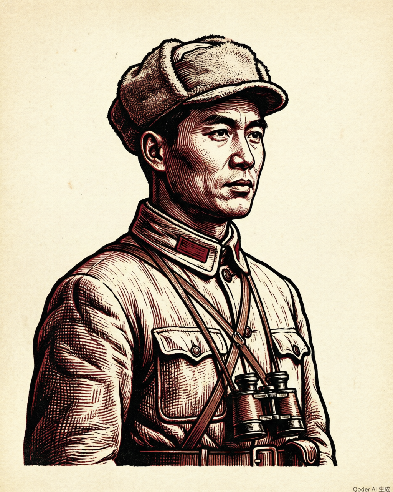

木刻演绎 · 非本人肖像
战斗
坐标待核
青杠坡战斗
- 彭德怀
- 红三军团 军团长
- 刘伯承
- 红军 总参谋长
- 陈 赓
- 红军 干部团 团长
「此处放史料原文（须核出处，逐条标页码）」
同一版式的三种卡型 · 战斗卡 / 决策卡 / 渡河卡。人像为木刻风格艺术演绎，不对应任何真实人物，定稿须替换为合规图像或全部改为无名群像演绎。

木刻演绎 · 非本人肖像「此处放史料原文（须核出处，逐条标页码）」
「此处放史料原文（须核出处，逐条标页码）」
「此处放史料原文（须核出处，逐条标页码）」
372px+，人像区 176×200，右侧为信息区（卡型 chip → 标题 → 时间·地点 → 人物职务行）。以上均为网络来源，只作线索；定稿须换成权威出版物与档案，并逐条标页码。
eventCardRef 字段），时间轴到点自动弹出。